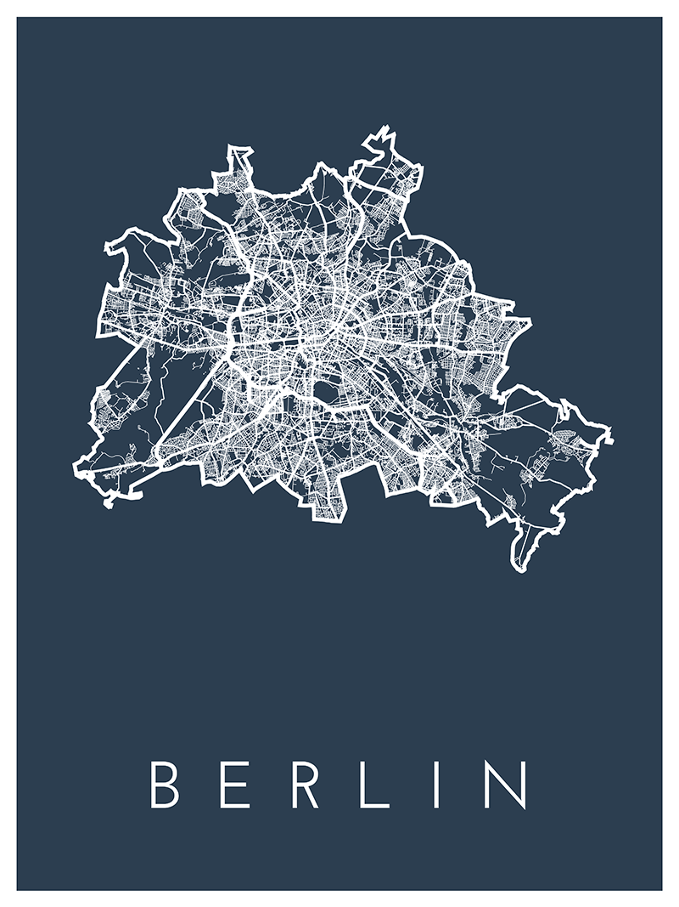
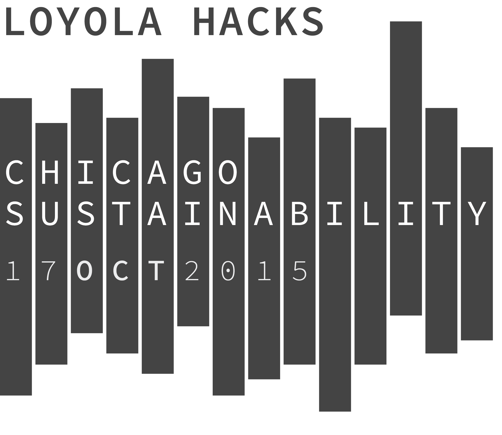

Hello! My name is Thomas. I am a Software Engineer and Web Developer with a passion for design and open source technology based in Chicago, IL. I am currently studying Computer Science in my final year at Loyola University Chicago. I am also a full stack developer and designer at Oranj.
I spend my free time researching and exploring the confluence of technology, art, design and human rights. I also enjoy the hiking and photography.
These are a selection of my recent projects. They are from a combination of classes, groups that I am involved in on campus, freelance work and just for fun. With all of my projects, I try to approach the challenge with the end-user at the forefront of my focus. Each project here represents a different area of interest to me, all united under design and code.
After being introduced to the facinating world of Geographic Information Systems as a web development intern at NBT Solutions, a custom GIS web development outfit, I decided to test the limits of maps. I wanted to explore how to meaningfully display only a small subset of potential data on a map, in a minimalist and beautiful way. In the process I created dozens of different posters featuring displays of road networks in well-known cities.
To create these maps, I used data from the awesome contributers over at OpenStreetMap and the TileMill project created by the folks at Mapbox. Some additional post processing to the generated svg files was completed in Adobe Illustrator.
LuTech is a technology group at Loyola University Chicago that I co-founded as a way to create supplemental experiences for the Computer Science Department and anyone interested in technology and computer science. We decided to hold a series of hackathons called Loyola Hacks with each event focusing on a different theme.
With this particular work I approached designing an informative poster for the event first and building a single-page website second. Using the poster design as a reference, I brought it to life in web form.
This is a full design and development project for the Access Contemporary Music organization based in Chicago, IL. We worked together to create a new design for their organization's website. They needed a responsive site that would put more emphasis on their Global Connections composer members.
The website is a custom Wordpress template built in PHP, Javascript, HTML and CSS.
For a history class that I took in Fall 2014 about 20th Century Europe while studying in Rome for the semester, I designed an Angular, Node.js web application to do the basic functions of an Enigma Machine.
The project needed to involve a multimedia research project regarding anything to do with Europe in the 20th Century. Lacking CS courses at Loyola's John Felice Rome Center, I chose to research the Enigma Machine and present a informative and interactive website about it as my project. I leveraged multiple NPM libraries as well as created an Express server and hosted it on Heroku.